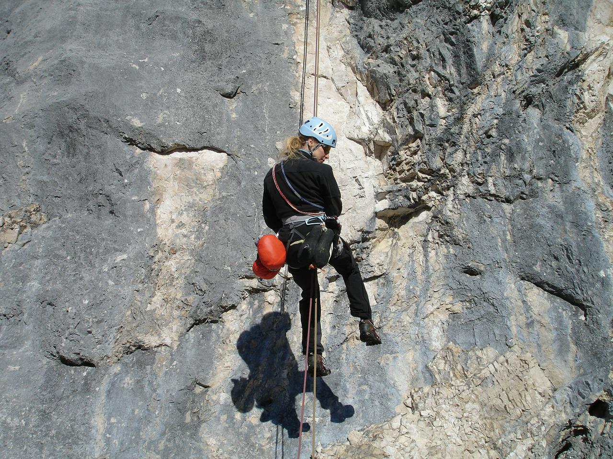

Our rope-base activities
All rope-based activities take place on site with full safety equipment provided

Abseilling
Take the scary step and abseil from the top of one of the local quarry slabs. There is a lovely view... if you are brave enough to look down! Max group size 8. Ages 8+

Climbing
Scale the highs of one of the local quarry slabs. Max group size 8. Ages 8+

High ropes
Tackling different exercises and obstacles 8 meters above the ground is a totally new way of fun.Max group size 8. Ages 8+

Pole Climbing
Ever wondered how telephone engineers get to the top of the telephone poles? Well, here’s your chance to find out. Max group size 8. Ages 8+

Tug of War Rope Game
Teamwork and cooperation is essential for a good Tug of War game. Max group size 8. Ages 8+
****Customer reviews****
- ‘We had a great time and loved all the different activities that we did’ − 8th Gourock Guides
- ‘Thank you to all the staff who worked so hard, in awful weather, to make sure that all the pupils had an amazing experience’ − Mrs Kahn, Hillend Primary School
- ‘The kids had a ball and didn’t want to leave’ − Mr Evans, PE teacher